# Load packages
library(ggplot2)
library(gridExtra)
library(bootstrap)
library(tidyverse)
library(latex2exp)
library(datasets)
library(vegan)
library(ade4)
library(kableExtra)Resampling methods
Authors: Lucien Ricome, Youna Douchet, Pierre-Alexandre Quittet, Bastien Clémot
General introduction
While studying random variables, it is useful to know which statistical distribution they are following. Such knowledge allows to make inferences about the statistical population when only sub-samples are available. For instance, it is needed in order to calculate confidence intervals around an estimated statistic or to calculate p-values to test hypothesis. In other words, recognizing a statistical distribution of the sampled data is essential to estimate the reliability of estimations.
Many well-studied statistical distributions can be useful in this situation, some of the most famous being the Normal distribution, the Poisson distribution or the Binomial distribution. Despite the diversity of studied distribution, sampled data distribution often differ, whether because they do not follow any studied statistical distribution or because too few data are available making it difficult to recognize any distribution.
In this situation, resampling procedures become interesting. It is a non-parametric statistic which has many usages, such as calculating confidence intervals or estimating p-values. The principle of resampling is to “draw samples from the observed data to draw certain conclusions about the population of interest” (Sinharay 2010). This chapter will discuss three resampling techniques: the jackknife, the bootstrap and the permutation (with a focus on the mantel test).
Before diving into the subject, let’s load some packages:
Confidence interval estimation: Jackknife and Bootstrap methods
To illustrate the following methods, we’ll use the Iris RBase dataset.
# Original dataset
data <- iris
head(iris) Sepal.Length Sepal.Width Petal.Length Petal.Width Species
1 5.1 3.5 1.4 0.2 setosa
2 4.9 3.0 1.4 0.2 setosa
3 4.7 3.2 1.3 0.2 setosa
4 4.6 3.1 1.5 0.2 setosa
5 5.0 3.6 1.4 0.2 setosa
6 5.4 3.9 1.7 0.4 setosaSuppose we’re interested in determining the average width of the sepals in a wild population of Iris flowers. However, it’s practically impossible to measure the sepals of every single flower in the population. Instead, we’ve sampled and measured a specific number of individuals in the field. To simplify, let’s consider our Iris dataset as a representation of the complete wild population (which, in reality, is inaccessible) and select only a small number of individuals to mimic our field sampling.
Normally distributed sample
Let’s first imagine that we only sampled 100 individuals within our population.
# Our real population
irisPopulation <- iris$Sepal.Width
# Randomly sample 100 individuals
set.seed(42)
data_sample <- irisPopulation[sample(1:150,100)]
# Histogram
plot1 <- ggplot()+
geom_histogram(aes(x = data_sample),colour = "black", fill = "white", bins = 8)+
xlab("Sepal width")+
labs(title = "Sepal width distribution (n=100)") +
theme_classic()
# QQ-plot
plot2 <- ggplot()+
stat_qq(aes(sample=data_sample))+
stat_qq_line(aes(sample=data_sample), color="red")+
xlab("Normal theoretical quantiles")+
ylab("Sub-sample quantiles")+
labs(title = " Sepal width QQ-plot (n=100)") +
theme_classic()
# Print
grid.arrange(plot1,plot2,ncol=2)
The sample being normally distributed, we can compute its mean (\(\mu\)), as well as its confidence interval as below:
# Compute sample mean
cat("mu = ",mean(data_sample),"\n")mu = 3.08 # Compute confidence interval
low <- mean(data_sample)-1.96*sd(data_sample)/sqrt(length(data_sample))
high <- mean(data_sample)+1.96*sd(data_sample)/sqrt(length(data_sample))
cat("Lower bound : ",round(low,2), " Upper bound = ",round(high,2))Lower bound : 2.99 Upper bound = 3.17Note: the 1.96 value comes from the normal distribution table to obtain a 95% confidence interval.
Then, we can easily compare this result with the actual mean of our wild population, that theoretically we do not know:
# Compute population mean
cat("mean = ",mean(irisPopulation))mean = 3.057333The mean of our population falls within our confidence interval!
Non-normally distributed sample
Now, let’s consider that we were only able to sample 15 individuals within our wild population.
# Randomly sample 15 individuals
set.seed(42)
data_sample <- irisPopulation[sample(1:150,15)]
# Histogram
plot1 <- ggplot()+
geom_histogram(aes(x = data_sample),colour = "black", fill = "white", bins = 8)+
xlab("Sepal width")+
labs(title = " Sepal width distribution (n=15)") +
theme_classic()
# QQ-plot
plot2 <- ggplot()+
stat_qq(aes(sample=data_sample))+
stat_qq_line(aes(sample=data_sample), color="red")+
xlab("Normal theoretical quantiles")+
ylab("Sub-sample quantiles")+
labs(title = " Sepal width QQ-plot (n=15)") +
theme_classic()
# Print
grid.arrange(plot1,plot2,ncol=2)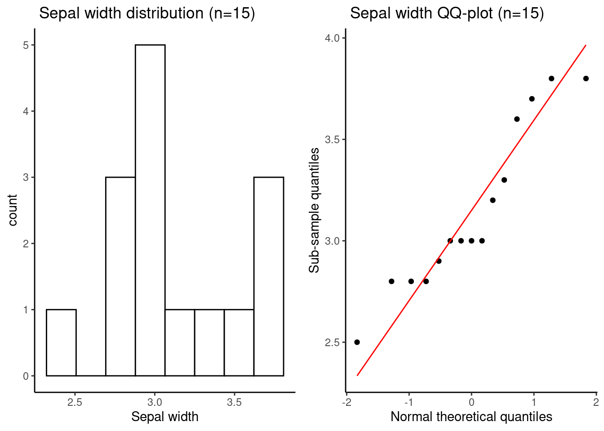
This time, our sample size is too small, and its distribution is no longer normal. In this very common scenario, what options do we have to estimate a confidence interval around any of our parameters of interest, like the mean? This is where resampling methods get interesting.
The Jackknife resampling method
This method was first proposed by Quenouille (1949). The name “Jackknife” comes from the fact that it is often referenced as a “quick and dirty” tool of statistics (Abdi and Williams 2010). It means that it is usable in many situations but it is often not the best tool. The technique allows us to estimate a confidence interval for some statistics when the dataset is too small and/or when it does not follow a known distribution.
Principle of the leave-one-out Jackknife (Sinharay 2010 ; Petit 2022)
The main goal of the jackknife method is to calculate a confidence interval around a statistic when classical statistics can not apply to the data.The principle is to create subsamples of the initial sample by successively removing some of the observations. Then, on each subsample, a pseudo-value will be calculated. With all the pseudo-values, it is possible to calculate an estimator of the statistic and to estimate its confidence interval.
The most famous jackknife is the the leave-one-out jackknife (or order 1 jackknife) for which all the subsamples contain all the observations except one. Concretely, for a sample of \(n\) observations, there will be \(n\) subsamples of size \((n-1)\). The \(i^{th}\) subsample will be composed of observations from \(1\) to \(n\) minus the \(i^{th}\) observation.
To illustrate, here is our sample:
data_sample [1] 3.7 2.9 2.8 3.0 2.8 3.0 3.0 3.8 3.3 3.2 2.8 3.0 3.6 3.8 2.5And we can represent some subsamples:
cat("1st subsample : \n",data_sample[-1], "\n")1st subsample :
2.9 2.8 3 2.8 3 3 3.8 3.3 3.2 2.8 3 3.6 3.8 2.5 cat("4th subsample : \n",data_sample[-4], "\n")4th subsample :
3.7 2.9 2.8 2.8 3 3 3.8 3.3 3.2 2.8 3 3.6 3.8 2.5 Calculation of pseudo-values
After creating the subsamples, the next step is to calculate pseudo-values for each of the new subsamples. The formula for pseudo-values depend on the statistic of interest. In our case we want to estimate the mean, the formula will then be:
\[ v_{i} = n\overline{X} - (n-1)\overline{X}_{-i} \]
with the following variables:
| Variable | Meaning |
|---|---|
| \(v_{i}\) | Pseudo value of the \(i^{th}\) subsample |
| \(n\) | Total number of observations |
| \(\overline{X}\) | Mean of the initial sample |
| \(\overline{X}_{-i}\) | Mean of the \(i^{th}\) subsample, corresponding to all observations except the \(i{th}\) |
Let’s write a function which create the subsamples and calculate their pseudo values:
# Function for pseudo-values
pseudo_val <- function(data, theta){
# entry : data = the vector of data to which we want to apply the Jackknife
# entry : theta = function for the statistic of interest
# output : a vector of pseudo values for each subsample
n <- length(data)
mean_init <- theta(data)
pv <- rep(NA,n) #to keep in memory each pseudo value
for (i in 1:n) {
pv[i] <- n*mean_init - (n-1)*theta(data[-i])
}
return(pv)
}To try the function:
# Function test
pv <- pseudo_val(data = data_sample,
theta = mean)
print(pv) [1] 3.7 2.9 2.8 3.0 2.8 3.0 3.0 3.8 3.3 3.2 2.8 3.0 3.6 3.8 2.5Statistical test
The jackknife estimator \(\theta\) of the mean will then be calculated as follow:
\[ \begin{align} \hat{\theta} & = \frac{\sum_{i=1}^{n}v_{i}}{n} \\ \hat{\theta} & = \overline{v} \end{align} \]
It corresponds to the mean of the pseudo values \(v_i\).
# Compute mean of the pseudo-values
mean_pv <- mean(pv)
mean_pv[1] 3.146667The Jackknife estimator \(\theta\) obtained is 3.15. This technique supposes that the Jackknife estimator is normally distributed and its standard error is calculated as follow:
\[ \begin{align} SE_\hat{X} & = \sqrt{\frac{\sum_{i=1}^{n}(v_{i}-\overline{v})}{n(n-1)}} \\ SE_\hat{X} & = \sqrt{\frac{\sigma_{v}^{2}}{n}} \end{align} \]
With \(\overline{v}\) being the mean of the pseudo values (and the jackknife estimator).
# Compute standard error
SE <- sqrt(var(pv)/length(pv))
SE[1] 0.1050472Confidence interval
From these we can calculate a confidence interval:
\[ [\, \overline{v} - 1.96 \, SE_\hat{X} ; \overline{v} + 1.96 \, SE_\hat{X} \,] \]
Note: the 1.96 value comes from the normal distribution table to obtain a 95% confidence interval.
Lower bound : 2.94
Higher bound : 3.35The estimated Jackknife mean is \(3.15\) with the following confidence interval : \([2.94\:;\:3.35]\). The real value \(\mu = 3.05\) is captured within the bounds of the confidence interval which indicate the robustness of the estimation process.
R package
On r, functions already exist to automatically execute the Jackknife. For instance, in the package bootstrap (Tibshirani 2019), there is a function jackknife. The function take as entry a vector containing the data (x) and a function indicating which statistic needs to be estimated (theta).
# Package function
bootstrap :: jackknife(x= data_sample,
theta = function(x) mean(x))$jack.se
[1] 0.1050472
$jack.bias
[1] 0
$jack.values
[1] 3.107143 3.164286 3.171429 3.157143 3.171429 3.157143 3.157143 3.100000
[9] 3.135714 3.142857 3.171429 3.157143 3.114286 3.100000 3.192857
$call
bootstrap::jackknife(x = data_sample, theta = function(x) mean(x))The output of the function include the standard error ($jack.se) as describe above. It also include the bias ($jack.bias) which is the difference between the initial sample statistic and the jackknife estimated statistic. It is important to note that the output $jack.values does not correspond to the pseudo values but to the statistic of interest calculated on every subsample. In our example, it correspond to the mean of each subsample.
Strengths of the method
As seen precedently, the Jackknife allows to calculate a confidence intervall when data are not following a normal distribution and to estimate the bias induced when only a sample of the statistical population is observed. These two characteristic does not only apply to univariate estimators such as the mean. It can be used on correlation coefficients and regression parameters for instance (Sinharay 2010). In that case, each subsample leave one observations out with all its associated variables. The jackknife method is peticularly interesting when it comes to make inferences about variance ratio. It can perform as good as the Fisher test if variables are normally distributed and better if they are not (miller_jackknife?–review_1974).
The Jackknife method was a good tool in the last century as it was easy to apply manually but it is nowaday surpassed by other methods which emerged thanks to the evolution of computers.
Weaknesses of the method
This method is not always efficient, it is not recomanded for time series analysis where some time period are successively removed to create the subsample. Moreover it has little succes when it comes to the estimation of single order statistics (specific values in an ordered set of observations or data points) such as the median or the maximum (miller_jackknife?–review_1974). But for this last point, other jackknife can be used such as the deleted-d jackknife which perform better for the median. In this method, subsamples are of size \((n-d)\) and there are \(\binom{n}{d}\) subsamples.
For more informations about applications of the Jackknife you can read the paper: Jackknife a Review by Rupert G. Miller (miller_jackknife?)–review_1974.
The bootstrap re-sampling method
Introduction and Principle
Now that we’ve thoroughly explored jackknife resampling in the previous section, let’s delve into another resampling technique: the bootstrap method.
Similar to jackknife, bootstrap aims to estimate descriptive parameters of a sample and assess the accuracy of these estimates for making inferences about the actual population. It is yet another statistical inference method that involves generating multiple datasets through resampling from the original dataset. Essentially, the concept revolves around using resampling techniques to create a probability distribution for a chosen parameter. This distribution, known as the empirical distribution function, serves as an estimation of the true probability distribution of our parameter in the population. In practice, similar to the earlier section, our objective here is to compute parameters of interest from our sample (such as mean, median, or even the \(R^2\) of a regression, among others) and establish confidence intervals around these estimates.
The fundamental difference between jackknife and bootstrap lies in their resampling methodologies. In each of its \(i\) iterations, bootstrap randomly resamples \(n\) elements from an initial sample of \(n\) data points with replacement. This leads to two crucial distinctions from the resampling method employed in jackknife: i) The new samples generated through bootstrap maintain the same size \(n\) as the original dataset. ii) Given the sampling with replacement approach, a particular element can occur multiple times in a new sample or might not appear at all during the resampling process.
After generating these \(i\) bootstrap samples, the intended statistical parameters are computed for each of these samples. As a result, we obtain a distribution of \(i\) data points derived from these samples, forming what is known as our empirical distribution function. Subsequently, the analysis of this distribution allows us to estimate precision, particularly in establishing the confidence interval for our statistical parameters.
Practice and Application
If the previous introduction seemed a bit perplexing, don’t worry—we’ll use an example to illustrate this concept.
For this demonstration, we’ll once again consider our non-normally distributed sampling of 15 individuals. Let’s proceed with the calculation of the mean.
# Field sampling mean
mean(data_sample)[1] 3.146667So, we’ve obtained a mean value of 3.15, which is great. However, this mean value can’t be reliably generalized to the entire population because we lack information about the variability induced by the specific individuals we chose to sample. As highlighted in our previous code, we only sampled \(n=15\) individuals in the field. Clearly, this limited sampling isn’t sufficient to confidently assert that our estimated mean is truly representative of the entire population. Hence, it becomes essential to gain insights into the variability of the mean we’ve just calculated. This is precisely where the bootstrap method comes into play.
We’ll now systematically apply our algorithm to resample the initial dataset obtained from our field sampling. This resampling process will be utilized to construct the probability distribution of our mean.
- bootstrap resampling iterations
# Fix our number of bootstrap iterations
B = 1000
# Create an empty list to stock our resamplings
bootstrapSamples <- vector("list",B)
# bootstrap resampling algorithm
for (i in 1:B) {
# Randomly sample n elements with replacement
bootstrapSamples[[i]] <- sample(data_sample, replace = TRUE)
}For pedagogical purposes, let’s examine a few resamples while comparing them to our initial field sampling dataset.
# Our original field sampling
sort(data_sample) [1] 2.5 2.8 2.8 2.8 2.9 3.0 3.0 3.0 3.0 3.2 3.3 3.6 3.7 3.8 3.8# A few resampling
sort(bootstrapSamples[[5]]) [1] 2.8 2.8 2.8 3.0 3.0 3.0 3.0 3.2 3.3 3.3 3.6 3.6 3.6 3.8 3.8sort(bootstrapSamples[[777]]) [1] 2.8 2.8 2.8 2.8 2.8 2.9 3.0 3.0 3.0 3.0 3.2 3.2 3.3 3.8 3.8Observe how certain values are repeated more frequently than in our initial dataset. Additionally, note that some values aren’t sampled at all. For instance, the value 2.5 appeared only once in our initial set and consequently was seldom or perhaps never resampled. Conversely, the value 2.8 was more prevalent in our initial dataset and consequently was sampled more frequently
- Compute mean for every resampled datasets
Now, we’ll compute the parameter of interest for each of our resampled datasets. This process will yield our set of \(i=1000\) mean values, which we’ll utilize to construct our empirical distribution in the subsequent step.
# Compute mean for each bootstrap samples
iterationMeans <- sapply(bootstrapSamples, mean)- Plot the probability distribution
The computation of the distribution for our parameter of interest is complete. We can now proceed to plot it, providing us with an understanding of the variability surrounding our estimated mean value.
# Probability distribution plot
ggplot(data = data.frame(iterationMeans), aes(x = iterationMeans)) +
geom_histogram(
binwidth = 0.05,
fill = "skyblue",
color = "black",
aes(y = after_stat(density))
) +
geom_density(alpha = 0.5, fill = "orange") +
geom_vline(
xintercept = mean(data_sample),
color = "red",
linetype = "dashed",
linewidth = 1.5
) +
labs(title = "Empirical probability distribution of mean values",
x = "Mean",
y = "Density") +
theme_classic() +
theme(text=element_text(size=15))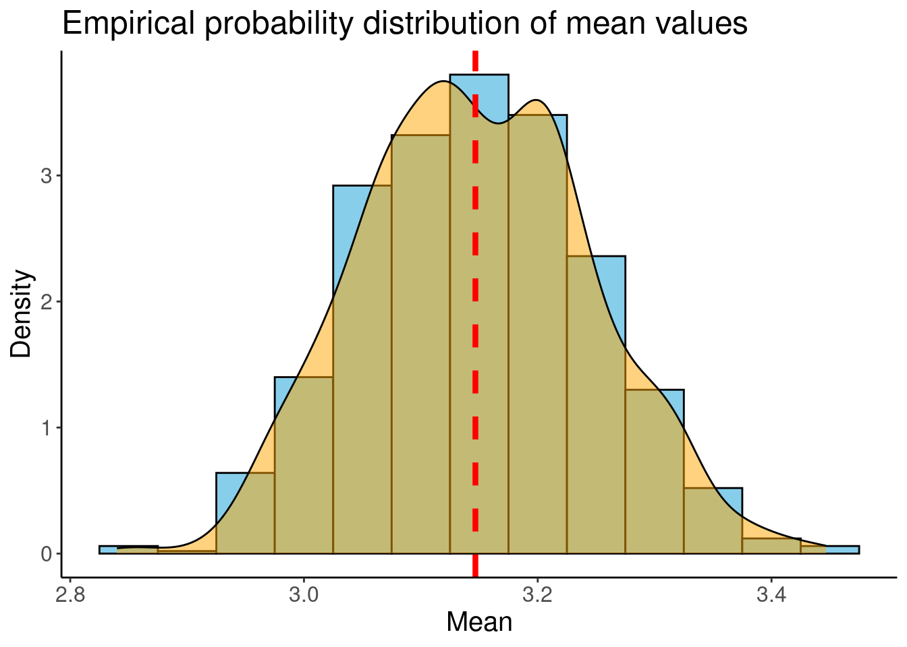
Hence, this probability distribution provides us with insights into the variability around the mean value estimated from our field sampling. As anticipated, and as indicated by the red dashed line, this distribution is centered around the estimated mean value.
- Compute Confidence Interval around our mean estimate
Recall the primary objective of the bootstrap method: to assess the precision of our parameter estimation to make inferences about the broader population. To accomplish this, we’ll utilize the bootstrap percentiles. For instance, suppose we aim to calculate the 95% Confidence Interval. In this case, we’ll allocate 5% of the error evenly on both sides of our distribution, corresponding to the values at the 2.5th and 97.5th percentiles in our empirical distribution.
# Get percentile 2.5%
quantile(iterationMeans, probs = c(0.025,0.975)) 2.5% 97.5%
2.966667 3.333500 And thus, we’ve successfully obtained our confidence interval for the mean estimation: \(2.97 \leq \overline{x} \leq 3.33\).
For educational purposes, let’s proceed to plot these percentiles in green.
# Probability distribution plot
ggplot(data = data.frame(iterationMeans), aes(x = iterationMeans)) +
geom_histogram(
binwidth = 0.05,
fill = "skyblue",
color = "black",
aes(y = after_stat(density))
) +
geom_density(alpha = 0.5, fill = "orange") +
geom_vline(
xintercept = mean(data_sample),
color = "red",
linetype = "dashed",
linewidth = 1
) +
geom_vline(
xintercept = quantile(iterationMeans, probs = 0.025),
color = "darkolivegreen4",
linetype = "dashed",
linewidth = 1.5
) +
geom_vline(
xintercept = quantile(iterationMeans, probs = 0.975),
color = "darkolivegreen4",
linetype = "dashed",
linewidth = 1.5
) +
labs(title = "Empirical probability distribution of mean values",
x = "Mean",
y = "Density") +
theme_classic() +
theme(text = element_text(size = 15))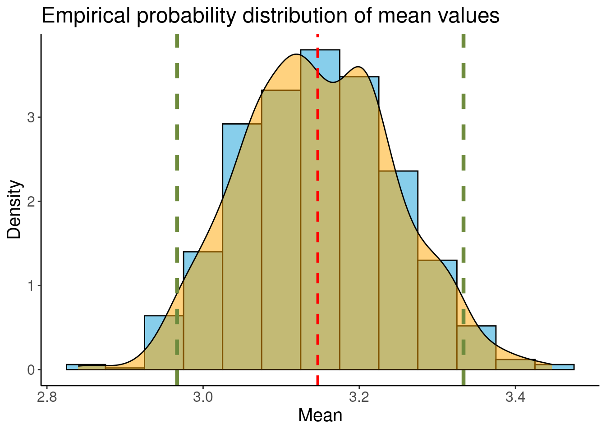
- Compare with population mean value
The bootstrap resampling method has facilitated the construction of a confidence interval around our mean estimate with a 5% margin of error. Now, let’s compare this interval with the actual value of our Iris population.
mean(irisPopulation)[1] 3.057333The actual sepal width mean of our population falls within the bounds of our confidence interval, which is highly encouraging! Comparing it to the interval estimated using the jackknife method, we notice that this interval is narrower and more precise. Consequently, we’ve effectively inferred information about the population mean in a scenario where we had limited data, made no normality assumptions, and where the standard computation of confidence intervals might not have been sufficiently robust and a
Strengths and Weaknesses
As we’ve seen, bootstrap is a powerful resampling technique used in statistics for estimating the precision of parameters. One of its primary advantages lies in its versatility across a wide spectrum of statistical estimations. Indeed, this resampling technique is applicable to various parameters, such as mean, variance, regression coefficients, and more. Furthermore, this method is particularly robust in handling complex data structure without strict distributional assumptions, meaning that it can easily works with non-normally distributed datasets with little observations, which is really relevant in real-word scenarios. In those cases, bootstrap ends up being more accurate than the standard intervals obtained under normality assumption.
However, one significant concern is its computational intensity, especially noticeable with larger datasets or complex models. Generating numerous bootstrap samples can demand, in certain cases, substantial computing resources. Additionally, bootstrap might display biased estimation of the accuracy of estimates, depending on whether or not the sampling dataset is representative of the actual population.
Overall, bootstrap’s major advantages lie in its broader applicability across various statistical estimations, but which comes with higher computational demands. In contrast, Jackknife might be less versatile, but tends to offer a better computational efficiency and less biased parameters, making it a favorable choice under certain conditions.
To go further
This section on the bootstrap method offers a fundamental understanding, providing explicit R scripts for pedagogical purposes. If you find yourself needing to utilize bootstrap, we highly recommend exploring the capabilities of the precedently presented bootstrap R package, which streamlines bootstrap implementation. Moreover, the bootstrap method extends beyond basic parameter estimation, offering various derivatives and applications catering to diverse needs:
- Parametric bootstrap: Assumes a specific parametric distribution, generating bootstrap samples from this fitted distribution and allowing inference within a particular statistical model.
- Smooth bootstrap: Incorporates smoothing techniques to reduce variability in resampling, ideal for noisy or irregular data.
- Bayesian bootstrap: Generates bootstrap samples from posterior distributions, useful for uncertainty estimation in Bayesian analysis (see more in Bayesian chapter of this book).
Lastly, bootstrap resampling isn’t limited to parameter estimation. It can also be employed to assess statistical tests, a topic we’ll delve into in our upcoming section.
Permutation Tests
Permutation tests are a robust statistical tool for comparing groups and assessing the impact of one variable on another. In contrast to bootstrap methods that generate confidence intervals, their aim is to calculate a p-value, providing a basis for making statistical conclusions. What sets permutation tests apart is that, unlike some other tests, they don’t depend on specific assumptions about the data distribution. This makes them particularly sturdy, especially in situations where the number of data points is limited. Permutation tests are straightforward to understand, easy to put into action, and their resilience makes them highly practical for real-world applications.
Foundations of Permutation Tests
Fundamental Principle
Permutation tests differ from classical statistical tests such as Student’s t-test or the \(\chi\) -square test in that they do not rely on specific assumptions about the distribution of data. Unlike traditional tests that assume a theoretical distribution of the test statistic under the null hypothesis, often based on well-known laws like the Gaussian distribution, permutation tests empirically generate this theoretical distribution directly from the data. This categorizes them as exact tests and non-parametric tests.
According to the central limit theorem, repeating a large number of observations of a random variable (in this case, the test statistic) leads to a Gaussian distribution. This distribution allows us to position the observed test statistic (calculated on our sample) and determine the significance of the effect of our explanatory variables. In other words, we generate a large number of permutations of the observations, calculate the test statistic for each permutation, and then compare the observed statistic to this null distribution. We’ll get into some reminder on what is the statistic of a test, a null distribution and a how p-values are generated to dive into the world of permutation test.
Parametric tests : test statistic, null distribution and p-value
The test statistic is a numerical measure used to evaluate whether observed differences between groups in a study are statistically significant. It quantifies the gap between observed and randomly attributable observations. In a very simplistic way, we could say they allow to determine the extent to which the effect we observe with our experimental design could be attributable to chance. Here are some familiar test statistics you’ve likely encountered in your fruitful scientific career:
\[ \begin{align*} F [\text{ANOVA}] &: \quad F = \frac{MS_{\text{between}}}{MS_{\text{within}}} \quad \sim \mathcal{F}(df_{\text{between}}, df_{\text{within}}) \\ \\ t [\text{Student's t-test}] &: \quad t = \frac{\bar{X}_1 - \bar{X}_2}{\sqrt{\frac{s_1^2}{n_1} + \frac{s_2^2}{n_2}}} \quad \sim t(df) \\ \\ \chi^2 [\text{$\chi^2$ Test}] &: \quad \chi^2 = \sum \frac{(O_i - E_i)^2}{E_i} \quad \sim \chi^2(df) \\ \end{align*} \]
With \(MS\) as the mean square error, \(df\) as the degrees of freedom, \(\bar{X}_i\) as the mean of group \(i\), \(s^2_i\) as the variance of group \(i\), \(n_i\) as the number of replicates in group \(i\), \(O_i\) as the observed \(\chi^2\) distance, and \(E_i\) as the expected \(\chi^2\) distance.
You may recall that these statistics typically follow well-established distributional laws. But what does “known distributional laws” mean? It means we know the probability of a given value of a statistical test (referred to as its probability distribution) based on certain parameter values (e.g., the degree of freedom for Student distribution). Hence, the term parametric tests! The probability distribution of a statistic under a specific parameter, such as the degrees of freedom [ddl] for a Student’s t-distribution, forms the basis of the null hypothesis in statistical testing. The null hypothesis represents the idea that any observed differences or effects are purely due to chance variation within this established distribution. By comparing our calculated statistic (the one coming from our data) to the expected distribution under the null hypothesis, we can assess whether the observed result is consistent with what we would anticipate if there were no real effect. In essence, this comparison allows us to make informed decisions about the significance of our findings in the context of the null hypothesis. Then, the p-value merely represent the probability of observe your observed statistic under this null distribution / hypothesis.
In simpler terms, when we talk about “known distributional laws,” it means we know how likely certain test results are under specific conditions. In the testing process, the null hypothesis proposes that any observed differences are merely random occurrences within the expected pattern. By comparing our actual result to what we would expect by chance, the p-value indicates the probability of our result occurring in this random scenario. If the likelihood of this chance scenario is highly improbable (typically below the 5% threshold), we reject the assumption that differences are random (reject the null hypothesis!). Conversely, if the chance scenario is ‘too probable’ (more than 5%), we conclude that it’s not safe to assert our effect is not due to chance and refrain from rejecting the null hypothesis.
Enough talking, let’s illustrate with a graphical example. Let’s imagine we want to compare the sepal length between the species I. virginica and I. versicolor using a Student test. First, we plot the data:
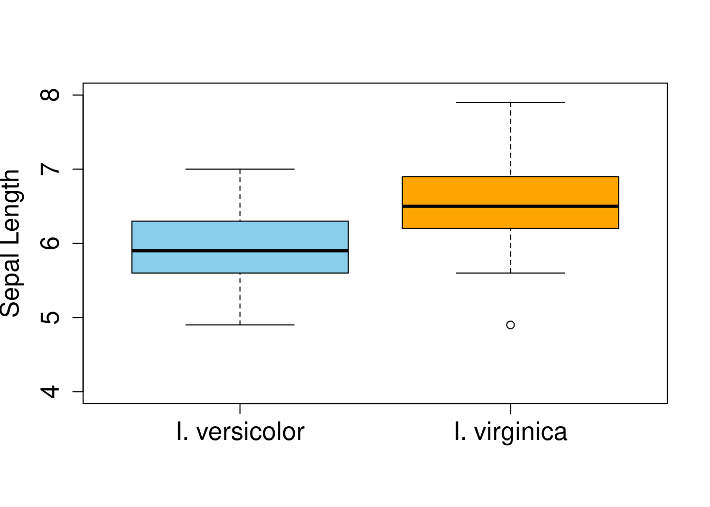
I. virginica seems to have slightly bigger sepal length than I. versicolor. Assuming all conditions are met, we perform a Student test to determine the significance of the difference observed:
t.test(
x = iris$Sepal.Length[iris$Species == "virginica"],
y = iris$Sepal.Length[iris$Species == "versicolor"],
paired = F,
var.equal = T,
alternative = "two.sided"
)
Two Sample t-test
data: iris$Sepal.Length[iris$Species == "virginica"] and iris$Sepal.Length[iris$Species == "versicolor"]
t = 5.6292, df = 98, p-value = 1.725e-07
alternative hypothesis: true difference in means is not equal to 0
95 percent confidence interval:
0.4221484 0.8818516
sample estimates:
mean of x mean of y
6.588 5.936 Here we observe a significance difference between the species I. virginica and I. versicolor with I. virigina having bigger sepal length than I. versicolor.
Let’s get more precise on how do we get the p-value associated with this comparison and make the connection with what we saw earlier in this endless introduction paragraph. The Student distribution under null hypothesis (\(H0\)) is defined according the parameter ‘degree of freedom’, here equal to \(df = 98\). Let’s plot this \(H0\) probability distribution of the test we just performed:
# Density distribution of the t statistic
curve(
dt(x = x, df = 98),
xlim = c(-6, 6),
ylab = "Density",
xlab = "t",
cex.axis = 1.5,
cex.lab = 1.5
)
This distribution shows the probability associated with each value of the \(t\) statistic for a similar degree of freedom (\(98\)) with our data. It contains all the probabilities of the statistical tests assuming that ‘sepal length means do not differ between both species.’ Now, our task is to position the \(t_{obs}\) representing the observed test statistic we calculated from our data, which is \(t_{obs} = 5.6\), in this null distribution. The goal is to figure out how probable is the value 5.6 in the probability distribution of the Student’s t-distribution with \(df=98\).
Since we conducted a two-sided test, meaning no a priori assumption about the direction of the effect, we split the 5% of the \(\alpha\) threshold between both sides of the distribution. We will visually identify the values of \(t\) for which less than \(2.5%\) and more than \(97.5%\) of values are respectively below and above these thresholds. If our \(t_{observed}\) falls below the \(2.5%\) or above the \(97.5%\) threshold, we consider the observed difference statistically significant.
# Density distribution of the t statistic
curve(
dt(x = x, df = 98),
xlim = c(-6, 6),
ylab = "Density",
xlab = "t",
lwd = 1.5,
cex.axis = 1.5,
cex.lab = 1.5
)
# Quantile function : values of t associated of a two sided test
threshold <- qt(p = c(0.025, 0.975), df = 98)
abline(v = c(threshold[1], threshold[2]), lwd = 1.5, lty = 2, col = "red")
# Color the area of significance
x <- seq(-6, 6, length.out = 100000)
y <- dt(x, df = 98)
polygon(c(x[x<=threshold[1]], threshold[1]), c(y[x<=threshold[1]], y[x == max(x)]), col = "red")
polygon(c(x[x>=threshold[2]], threshold[2]), c(y[x>=threshold[2]], y[x == max(x)]), col = "red")
text(x = 3.7, y = 0.3, labels = TeX("$quantile(1 - \\frac{alpha}{2})$"), col = "red", cex = .9)
text(x = -3.5, y = 0.3, labels = TeX("$quantile(\\frac{alpha}{2})$"), col = "red", cex = .9)
# Placing the t_obs value
abline(v = 5.6, lwd = 1.5, col = "blue")
text(x = 5, y = 0.1, labels = TeX("$t_{obs}$"), col = "blue", cex = 1.2)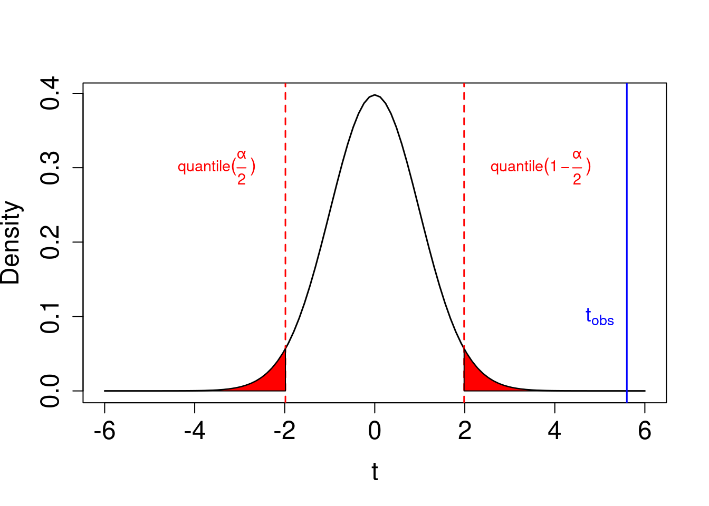
With \(\alpha\) the type-I error (here 5%). Hence \(t_{obs}\) is in the significance area (in red) meaning the difference is significant. Now we have all the reminders we need to master the conception of permutation test.
Permutation test : test Statistic, null distribution and p-value
The method for inference in permutation test is very similar in conception in the sense they are based on a statistic test, a null hypothesis and the generation of a p-value. In permutation test, the statistic test \(P_{obs}\) have to be defined. It can basically be anything that link the different conditions of our experimental design. For example, if we want to compare an effect on a response variable dispatch into two conditions (e.g. levels of a preditive categorical variable), the statistic test could be the difference of the sums, the variances, means… of the values of both groups. For example, let’s consider a difference in means as statistic test:
\[ P = \bar{X}_1 - \bar{X}_2 \]
where (\(\bar{X}_1\)) and (\(\bar{X}_2\)) are the means of the two groups compared. In the absence of a predefined theoretical distribution, like the Student distribution mentioned earlier, we need to determine where to place the observed test statistic \(P_{obs}\). To do this, we construct a null distribution. This involves randomly shuffling each value between the two groups and calculating the test statistic \(P_{H0}\) for this newly arranged dataset. Essentially, each data point is randomly assigned to either group 1 or group 2, reflecting the idea that belonging to one group or the other has no effect on the response variable since the data has been randomly shuffled.
We repeat this process many times, extracting the \(P_{H0}\) each time to build a distribution of the test statistic under the null hypothesis (\(H_0\)). According to the central limit theorem, which suggests that the distribution of random variables repeated a large number of times tends to follow a bell curve, regardless of the original distribution shape of those variables. Once we have this null distribution, we follow a similar procedure as described earlier for parametric tests. We compare our \(P_{obs}\) to this null distribution and determine its probability. Just like in parametric tests, in permutation tests, the p-value corresponds to the number of iterations where \(P_{H0}\) is above or below (depending on the direction of our hypothesis) the \(P_{obs}\) value.
Implementation of Permutation Tests
Test Steps
Typical steps to implement a permutation test include:
Formulate null and alternative hypothesis
Determine and calculate the test statistic from the observed data
Generate a large amount of permutations on independent unit of the data and calculate the test statistic for each permutation
Compare the observed statistic to the null distribution of test statistics
Conclude on accepting or rejecting the null hypothesis
Practical examples
Here we’ll present an example of permutation test on independent data and paired data.
Independent data (e.g. comparison of means)
Let’s take an example to test if the difference in means between two groups is statistically significant. We’ll use the mean statistic as described earlier and pose the same question asked in the Student test example: “Is the sepal length of the genera I. virginica and I. versicolor different?” However, in this case, we’ll only use 20 randomly chosen observations to illustrate how these tests can maintain high statistical power even with a low number of replicates compared to parametric tests and how we can reach to the same conclusion as before with the whole data set with minimal sample size.
set.seed(123)
# SELECT THE VARIABLES OF INTEREST
filter_data <- iris %>%
filter(Species == "virginica" | Species == "versicolor") %>%
droplevels()
# TAKE A SUBSET
sub_data <- filter_data[sample(1:nrow(filter_data), size = 20),]Let’s plot the sub-dataset.
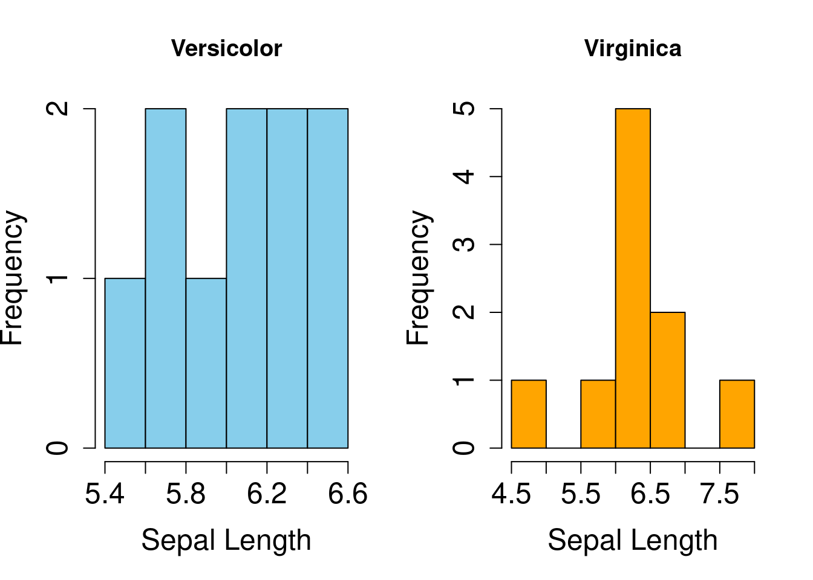
In this example, the data doesn’t follow a Gaussian distribution, as one might expect with such a small data set. It’s important to note that we employed a Student test here for illustration and comparison with the previous tests using the full data set.
# T TEST
t.test(
x = sub_data$Sepal.Length[sub_data$Species == "virginica"],
y = sub_data$Sepal.Length[sub_data$Species == "versicolor"],
paired = F,
var.equal = T,
alternative = "two.sided"
)
Two Sample t-test
data: sub_data$Sepal.Length[sub_data$Species == "virginica"] and sub_data$Sepal.Length[sub_data$Species == "versicolor"]
t = 0.95304, df = 18, p-value = 0.3532
alternative hypothesis: true difference in means is not equal to 0
95 percent confidence interval:
-0.3011112 0.8011112
sample estimates:
mean of x mean of y
6.36 6.11 # MANN-WHITNEY TEST
wilcox.test(sub_data$Sepal.Length[sub_data$Species == "virginica"],
sub_data$Sepal.Length[sub_data$Species == "versicolor"],
paired = F)FALSE
FALSE Wilcoxon rank sum test with continuity correction
FALSE
FALSE data: sub_data$Sepal.Length[sub_data$Species == "virginica"] and sub_data$Sepal.Length[sub_data$Species == "versicolor"]
FALSE W = 66, p-value = 0.239
FALSE alternative hypothesis: true location shift is not equal to 0Hence, neither of the tests for comparing means indicates a significant difference in sepal length between the two species whether we use a Student test, which assumes normality (although not met in this case), or the Mann-Whitney non-parametric test. This is where permutation test becomes interesting. They have a great power even when the number of replicates is low. Let’s see how we proceed.
Permuted data can be created, among various methods, by randomly assigning levels of the variable ‘species’ to sepal length values using the sample function. Subsequently, the difference of means is calculated to determine p_h0, representing the statistic for the permuted data (\(P_{H0}\)—the difference of means of sepal length in the permuted data). This process is repeated for a specified number of iterations (\(i\)), generating \(i\) values of \(P_{H0}\) and resulting in the null_distribution.
# INITIAL PARAMETERS
iteration <- 10000 # number of iteration
null_distribution <- c() # storage of the statistic for permuted data
# ALGORITHM
for (i in 1:iteration)
{
# --- Randomly assign a specie level to each observation
permuted_species <- with(sub_data, sample(Species, replace = F))
# --- Difference of means of both species under h0
p_h0 <- tapply(X = sub_data$Sepal.Length, INDEX = permuted_species, FUN = mean)["virginica"] -
tapply(X = sub_data$Sepal.Length, INDEX = permuted_species, FUN = mean)["versicolor"]
# --- Add to null distribution
null_distribution[i] <- p_h0
}
# CALCULATION OF THE OBSERVED STATISTIC
p_obs <- with(iris, mean(Sepal.Length[Species == "virginica"]) - mean(Sepal.Length[Species == "versicolor"]))
paste0("P_obs = ", p_obs)[1] "P_obs = 0.652"Note : here we use
replace = Fin thesamplefunction to keep the same number of replicates in each levels of species.
So here we have a \(P_{obs}\) value of 0.652. We can now plot the null distribution we generated with the permuted data and compare our observed statistic \(P_{obs}\) with the null distribution. Let’s plot it to have a visual support on how permutation test works.
# CALCULATE SIGNIFICANCE THRESHOLD
bornes <- quantile(null_distribution,c(.025,.975))
# VISUALISATION
hist(null_distribution,
xlim = c(min(null_distribution) - 0.15, 1),
breaks = 20,
main = "",
xlab = TeX("$P_{H0}$"),
ylab = "Frequency",
col = "skyblue",
cex.axis = 1.5,
cex.lab = 1.5
)
# POSITION THRESHOLD
abline(v = bornes, col = "red", lwd = 2)
text(x = 0.3, y = 1350, labels = TeX("$quantile(1 - \\frac{alpha}{2})$"), col = "red", cex = 0.8)
text(x = -0.65, y = 1350, labels = TeX("$quantile(\\frac{alpha}{2})$"), col = "red", cex = 0.8)
# POSITION P_OBS
abline(v = p_obs, lwd = 2, col = "darkolivegreen4", lty = 2)
text(x = .75, y = 1400, labels = TeX("$P_{obs}$"), col = "darkolivegreen4", cex = 1)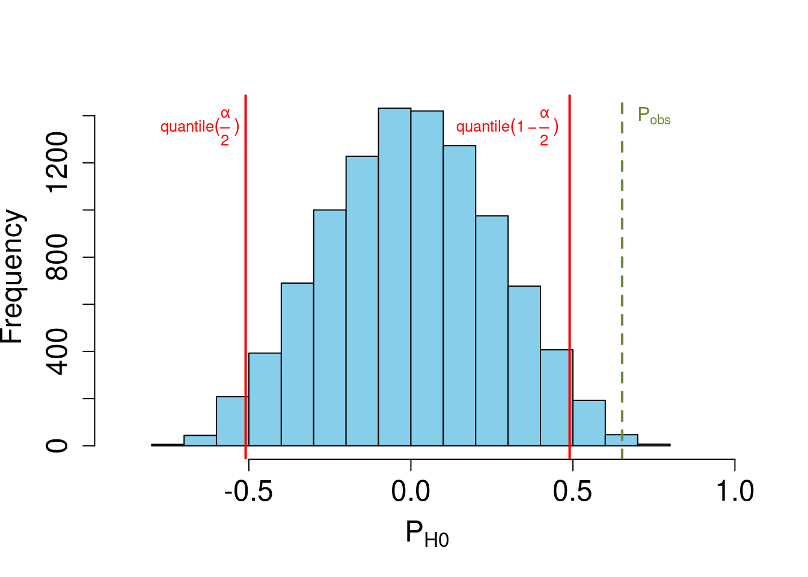
As anticipated by the central limit theorem, the distribution of the statistic we use, repeated 10,000 times, follows a normal distribution. It’s evident that our observed statistic calculated on the data (\(P_{obs}\)) stands out from the null distribution. Since we didn’t assume any specific direction for the difference (i.e. two sided test), we can determine the p-value as the number of absolut permuted observations (\(|P_{H0}|\)) greater than the absolute value of \(P_{obs}\), divided by the number of iterations:
\[ \text{p-value} = \frac{\text{Number of } \big|P_{H0}\big| > \big|P_{obs}\big|}{\text{Number of iterations}} \]
sum(abs(null_distribution) > abs(p_obs)) / iteration[1] 0.0037Here, the p-value of the test is 0.0037, meaning the test statistic observed \(P_{obs}\) falls into the non-significant area only 3.7% of the time. Thus, we conclude the difference between both means is significant at a threshold \(5\%%\) and that I. virginica has bigger sepal length than I. versicolor.
Paired data (e.g. comparison of correlation)
In this section, we’ll demonstrate how to conduct a permutation test on paired data using the iris data set. For this purpose, we’ll imagine a scenario where a fertilizer has been applied to each individual plant. The question will still focus on sepal length, exploring whether the fertilizer induces sepal length growth in a before-and-after experimental paradigm. Consequently, the data are paired by individuals. To ensure the independence of each unit of permutation, we must constrain how values are permuted within individuals. Unlike previous permutation procedures where all data were shuffled together, here we need to permute the data within each individual to account for the non-independence of the measures within each individual.
To simplify the procedure, we will only consider the species I. versicolor. Let’s create the sub-data and generate the new variable.
set.seed(123)
# FILTERING DATASET FOR VERSICOLOR
data_versicolor <-
data %>%
filter(Species == "versicolor") %>%
droplevels()
# GENERATION OF THE NEW VARIABLE
# --- Generation of the new variable Sepal.Length.T2 drawn drom normal distribution
Sepal.Length.T2 <- round(
runif(nrow(data_versicolor), min = .8, max = 1.2) * data_versicolor$Sepal.Length,
digits = 1
)
# --- Adding the new variable to the dataset
data_versicolor <-
data_versicolor %>%
mutate(Sepal.Length.T1 = Sepal.Length,
Sepal.Length.T2 = Sepal.Length.T2)Let’s plot this relation:
boxplot(
data_versicolor$Sepal.Length.T1,
data_versicolor$Sepal.Length.T2,
col = c("skyblue", "orange"),
ylab = "Sepal Length",
xlab = "",
main = "",
names = c("T1", "T2"),
ylim = c(3, 9),
cex.axis = 1.5,
cex.lab = 1.5
)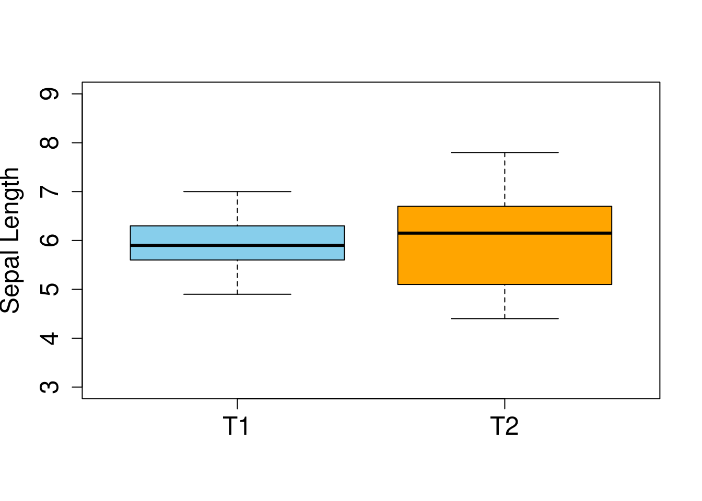
According to the visualization, the effect of the fertilizer does not seem to have a clear effect on the sepal length.
Let’s follow step by step the permutation procedure :
Formulate null and alternative hypotheses
H1 : the fertilizer has a positive effect on the sepal length, sepal measure at T2 is expected to be greater than T1
H0 : the fertilizer has no effect, no differences between T1 and T2
Determine and calculate the test statistic from the observed data
To illustrate another example of statistic, we’ll use the difference in sum of each column to assess significance :
\[ P = \sum_{i}^n \text{Sepal length T1}_i - \sum_{i}^n \text{Sepal length T2}_i \]
As long as the statistic enable comparing both conditions, it will work ! That is part of the magic of permutation test. We calculate the test statistic for \(P_{obs}\):
p_obs <- sum(data_versicolor$Sepal.Length.T1) - sum(data_versicolor$Sepal.Length.T2) p_obs[1] -2.6Generate a large amount of permutations on independent unit of the data and calculate the test statistic for each permutation
Given the paired nature of the data, we will randomly shuffle the values of the variable Sepal Length within each individual to construct the null hypothesis. Instead of permuting data in the entire column, as done before in the case of independent data, we will permute by row to ensure that the permutation is constrained by individual.
# INITIAL PARAMETERS iteration <- 10000 # number of iteration null_distribution <- c() # storage of the statistic for permuted data # ALGORITHM for (i in 1:iteration) { # --- Randomly assign age data witihin individual modality permuted_data <- t(apply( X = data_versicolor[c("Sepal.Length.T1", "Sepal.Length.T2")], MARGIN = 1, FUN = sample, # randomly shuffle the two values of each rows simplify = T # to have a matrix output (and not a list) )) # --- Difference of means of both species under h0 p_h0 <- sum(permuted_data[,1]) - sum(permuted_data[,2]) # --- Add to null distribution null_distribution <- c(null_distribution, p_h0) }Compare the observed statistic to the null distribution of test statistics
# CALCULATE SIGNIFICANCE THRESHOLD bornes <- quantile(null_distribution,c(.95)) # VISUALISATION hist(null_distribution, breaks = 30, main = "", xlab = TeX("$P_{H0}$"), ylab = "Frequency", col = "skyblue", cex.axis = 1.5, cex.lab = 1.5 ) # POSITION THRESHOLD abline(v = bornes, col = "red", lwd = 2) text(x = 12, y = 750, labels = TeX("$quantile(1 - \\alpha)$"), col = "red", cex = .8) # POSITION P_OBS abline(v = p_obs, lwd = 2.5, col = "darkolivegreen4", lty = 2) text(x = -5, y = 750, labels = TeX("$P_{obs}$"), col = "darkolivegreen4")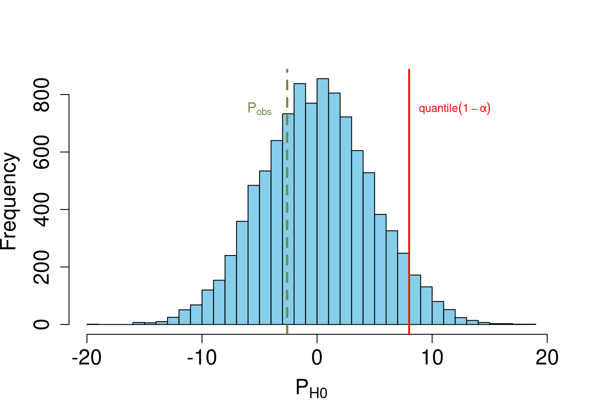
In this section, we hypothesized a direction of the effect by stating that the sepal length would be greater after the use of the fertilizer. Hence, we’ll calculate the p-value as the number of null observations greater than the observed test statistic (not in absolute value!):
sum(null_distribution > p_obs) / iteration[1] 0.7029Conclude on accepting or rejecting the null hypothesis
As \(p > 0.05\), we don’t reject the null hypothesis, suggesting that a difference is not observed before and after fertilizer usage.
In the next part, we delve into the Mantel test, a statistical method used to assess the correlation between two distance matrices. This test is particularly valuable in fields such as ecology and genetics, where understanding the spatial or temporal relationships between entities is crucial.
Mantel tests
Uses
The Mantel test (Mantel 1967) is used to evaluate the relationship between two matrices of correspondences measured on the same individuals. The two correspondence (distances) matrices are denoted by \(X\) and \(Y\). Here, the null hypothesis describes the independence of the mechanisms governing the distances between individuals. The Mantel test is mainly used for testing correlations between genetics or geographical distances. The H0 distribution is obtained by permuting the individuals between them. We will use the data set “ozone” from the website UCLA (https://stats.idre.ucla.edu/stat/r/faq/ozone.csv). In this case, Mantel’s test is used to know more about correlations between ozone differences and geographical distances between stations. In other terms: Is the ozone variability independent of the geographical variability?
Correspondence (distances) matrices
The first step is to extract the distances matrix of geographical distances and ozone distances between each station. Here, we select the five first individuals of the distances matrix.
set.seed(123)
# Download a dataset
ozone <- read.table("https://stats.idre.ucla.edu/stat/r/faq/ozone.csv", sep=",", header=T)
# We create a sub sample of the data set
ozone <- ozone[sample(1:nrow(ozone), size = 10, replace = FALSE),]
# Create distance matrices of geographical and ozone distances
station.dists <- dist(cbind(ozone$Lon, ozone$Lat))
ozone.dists <- dist(ozone$Av8top)| 1 | 2 | 3 | 4 | 5 | 6 | 7 | 8 | 9 | 10 | |
|---|---|---|---|---|---|---|---|---|---|---|
| 1 | 0.00 | 0.29 | 4.35 | 0.35 | 0.40 | 3.09 | 3.79 | 3.69 | 0.44 | 1.63 |
| 2 | 0.29 | 0.00 | 4.06 | 0.64 | 0.69 | 2.80 | 3.50 | 3.40 | 0.15 | 1.34 |
| 3 | 4.35 | 4.06 | 0.00 | 4.69 | 4.74 | 1.25 | 0.55 | 0.66 | 3.90 | 2.72 |
| 4 | 0.35 | 0.64 | 4.69 | 0.00 | 0.05 | 3.44 | 4.14 | 4.03 | 0.79 | 1.98 |
| 5 | 0.40 | 0.69 | 4.74 | 0.05 | 0.00 | 3.49 | 4.19 | 4.08 | 0.84 | 2.02 |
| 6 | 3.09 | 2.80 | 1.25 | 3.44 | 3.49 | 0.00 | 0.70 | 0.59 | 2.65 | 1.46 |
| 7 | 3.79 | 3.50 | 0.55 | 4.14 | 4.19 | 0.70 | 0.00 | 0.11 | 3.35 | 2.17 |
| 8 | 3.69 | 3.40 | 0.66 | 4.03 | 4.08 | 0.59 | 0.11 | 0.00 | 3.24 | 2.06 |
| 9 | 0.44 | 0.15 | 3.90 | 0.79 | 0.84 | 2.65 | 3.35 | 3.24 | 0.00 | 1.19 |
| 10 | 1.63 | 1.34 | 2.72 | 1.98 | 2.02 | 1.46 | 2.17 | 2.06 | 1.19 | 0.00 |
The distances matrix must be a squared matrix. Now we can apply the Mantel test our to matrix.
Mantel’s test application
There are some packages available to perform the Mantel test. For example, the ade4 package with the mantel. rtest() function as follows:
set.seed(seed = 123)
mod_ade <- ade4::mantel.rtest(as.dist(station.dists), as.dist(ozone.dists), nrepet = 1000)
mod_adeMonte-Carlo test
Call: ade4::mantel.rtest(m1 = as.dist(station.dists), m2 = as.dist(ozone.dists),
nrepet = 1000)
Observation: 0.2169789
Based on 1000 replicates
Simulated p-value: 0.08691309
Alternative hypothesis: greater
Std.Obs Expectation Variance
1.587656484 -0.001886359 0.019003800 The coefficient of correlation observed is -0.2 and the p-value is 0.9. If we put the threshold of significance at 0.05 the correlation is not significant here!
Another example of package is the vegan package which allows to use of different correlation statistics. In our case, we chose the Pearson correlation.
#Using the vegan package, pearson correlation
mantel(xdis = station.dists, ydis = ozone.dists, permutations = 1000)
Mantel statistic based on Pearson's product-moment correlation
Call:
mantel(xdis = station.dists, ydis = ozone.dists, permutations = 1000)
Mantel statistic r: 0.217
Significance: 0.082917
Upper quantiles of permutations (null model):
90% 95% 97.5% 99%
0.188 0.279 0.366 0.468
Permutation: free
Number of permutations: 1000Using this package, the results are similar. well! The p-value is indicated after the term “Significance:” and the correlation coefficient follows the term “Mantel statistic r”.
The mantel test evaluates the significance of the regression line between the two distance matrix. We saw that the mantel test is not significant. We detected no correlations between distances. Let’s plot the results:
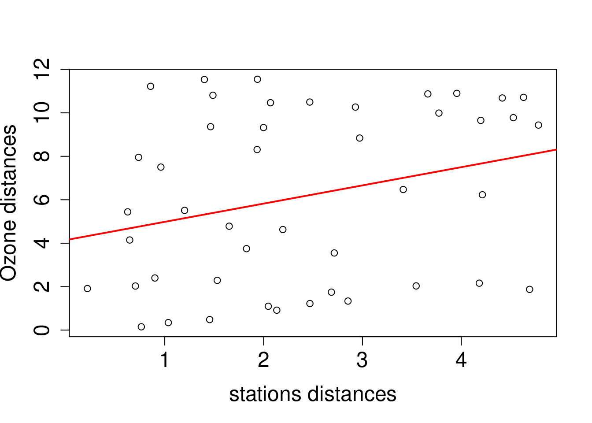
Permutation test on bootstrapped data
Exploring the precision of our calculated statistic becomes particularly insightful. To achieve a robust assessment, we could opt for a combined approach, integrating both bootstrap and permutation methodologies. In this process, we would initiate a permutation test on each pseudo-data set generated through bootstrapping. The objective is to collect the statistic for each iteration, resulting in a distribution that effectively communicates the variance of estimation linked to the difference in means. This combined technique not only provides a confidence interval around our statistic but also enhances the overall reliability of our findings by accounting for the complexities and uncertainties inherent in the data. Note that combining both re-sampling techniques can be computationally intensive.
To illustrate, we will consider construct the following model :
\[ \text{Sepal length} = \beta + \alpha(\text{Sepal Width}) + \epsilon \sim \mathcal{N}(0, \sigma^2) \]
With \(\beta\) representing the intercept, \(\alpha\) as the regression coefficient, and \(\epsilon\) denoting the error. The objective is to ascertain (i) the confidence interval of the regression estimate \(\alpha\) and (ii) the associated p-value. To achieve this, we will utilize a subset of the iris dataset comprising 25 randomly selected samples of the I. versicolor species:
set.seed(123)
# SUBSET OF IRIS (n=25)
sub_data <- iris[iris$Species == "versicolor",]
sub_data <- sub_data[sample(1:nrow(sub_data), size = 25, replace = F),]Now, the plan is to conduct \(j\) bootstrap datasets to evaluate the confidence intervals for both estimates \(\alpha_{obs}\) and \(\beta_{obs}\). For each of these \(j\) bootstrapped datasets, we will execute \(i\) permutation tests and calculate the mean value of the estimates from these \(i\) permutation tests to construct our null distribution. Subsequently, we will determine the confidence interval of the bootstrapped distribution of \(\alpha\) and assess its significance by comparing it to the null distribution. Let’s proceed. First, we calculate the observed \(\alpha\):
# OBSERVED ALPHA
alpha_observed <- round(lm(Sepal.Length ~ Sepal.Width, data = sub_data)$coefficients[[2]], 2)
alpha_observed[1] 0.98Our observed \(\alpha = 0.98\). We’ll keep it for later. Now, we’ll perform the combined bootstrapped / permutation procedure :
set.seed(123)
# NUMBER OF ITERATION
bootstrap_iteration <- 10000
permu_iteration <- 10
# STORAGE
# --- Null distribution
null_distribution <- matrix(NA, nrow = bootstrap_iteration, ncol = 1)
colnames(null_distribution) <- "alpha"
# --- Storage of mean of permuted values
permu_a <- c()
# --- Storage of the bootstrap value of a
boot_a <- c()
# ALGORITHM
# BOOTSTRAP
for(j in 1:bootstrap_iteration){
# --- Random sampling with replacement of rows tp generate bootstrap data
row_alea <- sample(1:nrow(sub_data), replace = T)
boot_data <- sub_data[row_alea,]
# --- Model with bootstraped data
mod <- lm(Sepal.Length ~ Sepal.Width,
data = boot_data # bootstraped data
)
# --- Store the boostrapped estimates
boot_a[j] <- mod$coefficients[[2]]
# PERMUTATION OF boostrapped DATA
for (i in 1:permu_iteration){
# --- random sampling WITHOUT replacement
y_permuted <- sample(boot_data$Sepal.Length, replace = F)
# --- Model with permuted data
mod_permu <- lm(y_permuted ~ Sepal.Width,
data = boot_data)
# --- Store of the estimates of permuted data
permu_a[i] <- mod_permu$coefficients[[2]]
}
# --- Mean values of the i permuted values of estimates for the j bootstrap iteration
null_distribution[j] <- mean(permu_a)
}Let’s plot our two distributions :
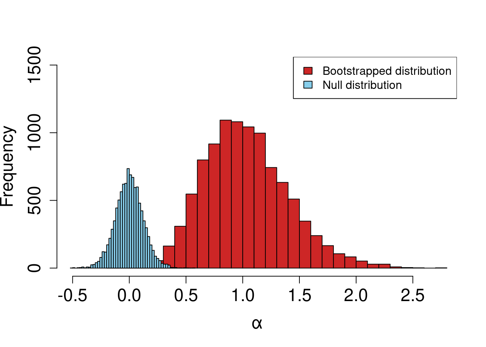
We observe a notable distinction between the bootstrapped distribution and the null distribution. To formalize this, we calculate the p-value, defined as the overlap between both distributions:
sum(null_distribution > boot_a) / bootstrap_iteration[1] 0.0012We obtain a p-value of \(p = 0.0012\), indicating that the coefficient is significantly greater than chance! Now, let’s leverage our combined techniques to calculate the confidence interval of this newly established significant \(\alpha\) along with the associated p-value:
round(quantile(boot_a, probs = c(0.025,0.975)), 2) 2.5% 97.5%
0.40 1.84 We have an estimate of \(\alpha = 0.98 \ [0.40, 1.84]\) with a \(95%\) confidence interval. To further demonstrate the reliability of permutation tests, let’s compare these results with the \(\alpha\) estimate of the entire dataset. Remember that we only used half of the original dataset !
original_data_alpha <- round(lm(Sepal.Length ~ Sepal.Width, data = iris[iris$Species == "versicolor",])$coefficients[[2]], 2)
original_data_alpha[1] 0.87So \(0.87 \in [0.40, 1.84]\) ! With only half the original sample size, we achieved the exact same conclusion with a bootstrap and permutation procedure. Although it takes a bit more computation time and resources, this procedure is really efficient even with low sample size !
Conclusion on permutation tests
In conclusion, permutation tests offer a powerful and flexible approach to statistical inference, especially when traditional parametric assumptions cannot be met. By iteratively permuting the observed data, these tests generate a null distribution under the assumption of no effect, enabling the assessment of the observed statistic’s significance. This makes permutation tests applicable in various scenarios, including comparisons of means, medians, correlations, or any other measure of interest.
While permutation tests can be computationally intensive (especially when combined with bootstrap procedures), their key advantage lies in providing reliable results with small sample sizes and non-normally distributed data. Unlike parametric tests, permutation tests do not rely on assumptions about the underlying distribution of the data, making them robust and applicable in a wide range of situations.
References
Abdi, Herve, and Lynne Williams. 2010. “Jackknife.” Encyclopedia of Research Design, January.
Mantel, N. 1967. “The Detection of Disease Clustering and a Generalized Regression Approach.” Cancer Research 27 (2): 209–20.
Petit, Eric. 2022. “Techniques de Rééchantillonnage.” Rennes.
Quenouille, M. H. 1949. “Approximate Tests of Correlation in Time‐series.” Journal of the Royal Statistical Society: Series B (Methodological) 11 (1): 68–84. https://doi.org/10.1111/j.2517-6161.1949.tb00023.x.
Sinharay, S. 2010. “Jackknife Methods.” In International Encyclopedia of Education, 229–31. Elsevier. https://doi.org/10.1016/B978-0-08-044894-7.01338-5.
Tibshirani, Rob. 2019. “Bootstrap: Functions for the Book "an Introduction to the Bootstrap".” https://cran.r-project.org/web/packages/bootstrap/index.html.